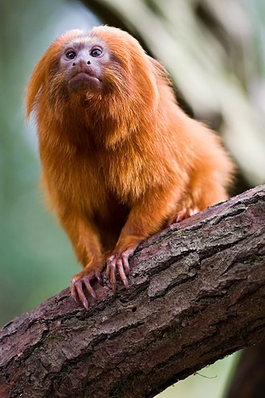
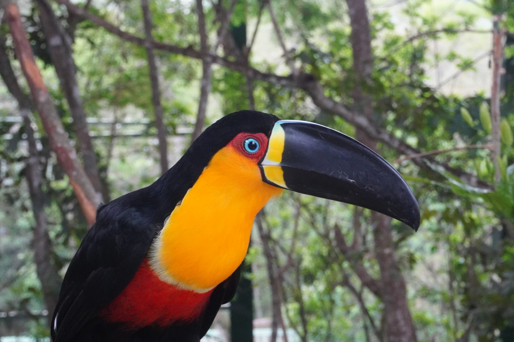

Fauna da Mata

Mico-leão-dourado

Onça-pintada

Explorando a vida, as feridas e a esperança da Mata Atlântica


Desmatamento, queimadas, caça ilegal e urbanização estão entre os principais fatores que ameaçam a sobrevivência da Mata Atlântica. Estima-se que apenas 12% da cobertura original ainda existe hoje.
Projetos de reflorestamento, criação de parques, educação ambiental e o apoio às ONGs são algumas das formas de proteger o que resta da Mata Atlântica.
Somos um grupo de estudantes apaixonados pela natureza e dedicados à conservação da biodiversidade. Este projeto foi criado para mostrar a beleza e os desafios da nossa floresta.